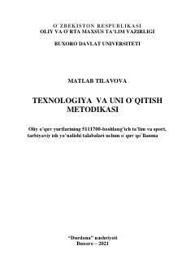

TVBo'lajak boshlang'ich sinf o'qituvchilari uchun texnologiya darslarini o'qitish metodikasiga bag'ishlangan o'quv qo'llanma.
Mazkur o'quv qo'llanma oliy o'quv yurtlarining boshlang'ich ta'lim va sport tarbiyaviy ish yo'nalishi talabalari uchun mo'ljallangan bo'lib, texnologiya darslarini tashkil etish, zamonaviy usul va vositalardan foydalanish metodikasini yoritadi. Qo'llanmada boshlang'ich sinf texnologiya darslarining nazariy asoslari, amaliy mashg'ulotlar texnologiyasi hamda interfaol usullardan foydalanish yo'llari batafsil bayon etilgan.